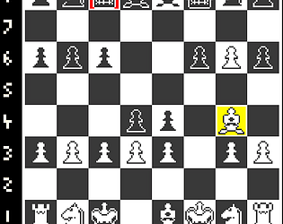

Siege Chess
[ Play here or read more below! ]
Around the time when we were all adjusting to a different life due to the COVID-19 quarantine, the influencer chess tournament "Pogchamps" had gained a lot of popularity and managed to get me on a huge chess kick. I had always had a passing interest in chess, but things like studying openings always felt daunting to me and I ended up avoiding it in the past more than giving it an earnest try. But when I actually saw it as a competition, with the competitors' thoughts and journeys behind it, the dots started to connect. I see myself as a very competitive person, and I really enjoy seeing other push themselves and their opponents to become a better version of themselves, so needless to say this fun tournament series really inspired me to actually give chess an honest chance. Immediately, I was hooked; I was constantly trying to improve my rating, solve harder puzzles, and learn new openings. Even today, chess is a game that I love to play with friends and competitively online.
Of course, I don't think the game of chess should actually be changed; this project is not an attempt to do that. But part of the fun of learning chess is knowing what you can do with it once you feel you have a handle on the fundamentals. I think that's why crazy variants like atomic chess are so popular. This is my own personal variant on chess, in part inspired by the fast pace of fighting games and some of my other favorite sports. The pawns starting up by one rank up on their respective sides was a sort of extension of the rule eventually added into chess where pawns could move two squares forward on their first move; this is still the case in "siege chess", and the pawns also start an additional square forward before any moves have been made. Another effort to make the game end faster was to change the objective of the game: instead of checkmate, the goal would now be to put your opponent's two kings in check at once. A full "siege." In my opinion, this new objective felt hard enough so that you still have to plan ahead and outsmart your opponent, but no so hard that the only way to end the game quickly would be if your opponent was asleep at the wheel. However, in line with not making things too easy, each side's second king would replace their queen, since the queen would have far too easy of a time putting two kings in check with all their options to move. Finally, in order to make not only the pace of the game faster, but also to have you and your opponent thinking fast each game, the position of the pieces in each player's back row is randomized. Each piece will have its matching piece the same amount of spaces away from each other to keep some sense of the traditional game and coordination between like pieces, like the light and dark bishops for each player, but other than that the formula is completely random.
A part of this project that surprised me was creating the chess engine that serves as the backbone for all of the logic for the game. I knew it would be difficult, and even still the difficulty surprised me; no matter it's age, chess is still an incredibly beautiful, complex problem, and I think something worth closely inspecting for any programmer or game designer.
